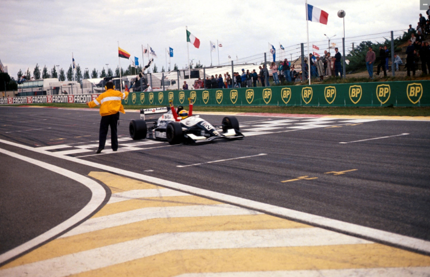

DOMÍNIO DE LUCA BADOER

Nasce uma nova estrela! O italiano Badoer ganha o título pela Crypton. Superioridade dos chassis Reynard, que conquistam os primeiros cinco lugares do campeonato. O alemão Michael Bartels é vice e Barrichelo é terceiro.
Francisco Santos
Nunca desde a introdução do Campeonato Internacional FIA de Fórmula 3000 em 1985, a mesma equipe ganhou mais do que uma vez. Este recorde manteve-se em 1992, quando o Team Crypton de Patrizio Cantu conquistou os louros com o jovem italiano Luca Badoer. “Estou muito otimista para o próximo ano”, falava Cantu no final de 1991, em Nogaro. “Espero por Badoer a correr e devemos ter um bom esquema de apoio para o próximo ano”. E assim foi. Badoer começou o ano consistente, mas não espectacularmente. Houve um quinto lugar na abertura, em Silverstone, seguido de sextos em Pau e Barcelona. Badoer a seguir desmontou a concorrência com três vitórias consecutivas esmagadoras em Enna, Hockenheim e Nurburgring. As duas primeiras foram em circuitos que favoreciam motores com boa potência em alto regime, tradicionalmente a especialidade de Heini Mader. Houve uma série de equipes que mudaram para os motores transformados pelo suiço, mas isso não pode explicar o sucesso de Badoer no Nurburgring. Muita gente ficou com dores de cabeça. A complicar todo o problema havia ainda a performance de Michael Bartels no segundo Reynard da Crypton. O alemão conseguiu um lote de segundos lugares em Pau, Hockenheim e Nurburgring. Apesar de ter estado longe de fazer vergonhas perto de Wendlinger, Schumacher e Frentzen no campeonato alemão de F3 há dois anos, muitos pensaram que o alemão era favorecido pelo carro. Muitos se perguntavam também o que é que a Crypton havia descoberto no carro que os outros não tinham encontrado. “É apenas um conjunto de coisas”, disse Cantu. “O carro é bom, o motor é bom e a equipe está trabalhando bem”.
Montermini e Barrichello
No final, Andréa Montermini emergiu para desafiar Badoer. Luca teve um violento acidente em Spa, e Montermini, que havia sido contratado pela Forti Corse depois que o seu patrocínio se tinha acabado na Il Barone Rampante, conquistou uma bela vitória. Ele bateu Luca para o segundo lugar em Albacete e quando a essas vitórias se juntou um sucesso anterior em Barcelona, ele passou a ser um perigo. Mas Badoer refez a vantagem em Nogaro, onde conquistou a sua quarta vitória da temporada enquanto Montermini se arrastou em quarto atrás de Jean-Marc Gounon e David Coulthard. Em terceiro no campeonato ficou Rubens Barrichelo, que começou o ano como campeão inglês de F3. Ele ficou em segundo atrás de um inspirado Jordi Gene em Silverstone, terceiro em Pau e segundo outra vez em Barcelona. A equipe de Giuseppe Cipriani começou por usar o novo e compacto motor Zytek-Judd KV, mas depois de fracas performances em Enna e Hockenheim trocou-o para um Mader. Barrichelo começou o ano com a fama de ser um piloto duro para a máquina, mas isso não foi confirmado este ano em que terminou nove das dez corridas nos pontos, demonstrando uma impressionante consistência.

Pacific e Jordi Gene
A Pacific Racing começou o ano como campeã titular com patrocínio Marlboro e os pilotos Laurent Aiello e Jordi Gene. Laurent havia tido excelente performance em 1991, batendo o seu colega na DAMS Allan McNish e Gene demonstrara muita consistência no campeonato britânico de F3 com nada menos que cinco segundos lugares. Passara a ser piada do paddock que o espanhol jamais conseguiría ganhar uma corrida. No entanto, não demorou muito na F3000 para que ele mostrasse o contrário. Fez a pole e liderou de ponta a ponta na abertura da temporada em Silverstone com uma magnífica vitória. Mas a promessa não sc cumpriu no resto da temporada. Foi terceiro em casa, em Barcelona, e segundo em Spa, mas além disso apenas foi quinto em Hockenheim. Tem que se dizer, no entanto, que Jordi foi muito mais impressionante que Aiello. O francês era quase paranoico sobre “o melhor equipamento de Jordi” - o que era totalmente falso - e nunca se mostrou capaz de se concentrar na sua tarefa de pilotar. De uma forma geral foi um ano altamente desapontador do qual ele terá de se recuperar depressa se quiser salvar uma carreira promissora.
Supremacia Reynard
Tal como em 1991 o carro ganhador foi o Reynard e os primeiros cinco classificados no campeonato pilotaram carros de Bicester. Jean-Marc Gounon foi o piloto Lola melhor classificado e adequadamente, o atraente francês terminou o ano com uma vitória na melhor corrida do ano, cm Magny Cours. Depois de Badoer e Montermini terem travado a sua cada vez mais dura e física luta e se terem eliminado, Gounon ficou a brigar com os Lolas Apomatox de Emmanuel Collard e Olivier Panis. Collard acabou por rodar ao tentar passar o seu colega e abandonou, o que permitiu que o Reynard da Paul Stewart Racing pilotado por David Coulthard evitou uma trinca da Lola! Gounon conseguiu pontuar mais três vezes: segundo em Nogaro, quarto em Silverstone e sexto no Nurburgring. Emanuel Naspetti terminou empatado em sexto com Gounon, apesar de ter feito apenas seis corridas antes de ser promovido à Fórmula 1 com a March. Emanuel conseguiu de repente uma melhoria de forma na metade de 1991, e conquistou quatro vitórias consecutivas. Desta vez ele ganhou uma controversa prova em Pau, quando Montermini jogou para fora da pista depois que Andréa se encostou com tudo nele e quase o prensou contra o muro dos boxes. O jovem ex-piloto de testes da Ligier, Emmanuel Collard teve um trio de quartos lugares e um terceiro em Albacete. A equipe Apomatox começou o ano como exclusiva utilizadora dos motores Cosworth preparados pela Sodemo, mas depressa se mudaram para a Langford & Peck. Nos testes pré-temporada, David Coulthard havia andado muitas vezes na frente. No entanto, uma vez iniciado o campeonato as coisas não correram tão bem para o talentoso escocês. A Paul Stewart Racing usou o motor Zytek-Judd KV mas David não pontuou antes da sétima prova em Spa. No entanto terminou bem o ano, com pódios nas corridas francesas em Nogaro e Magny Cours. Olivier Panis completou os primeiros 10 do campeonato, com um terceiro lugar na abertura em Silverstone e um segundo no fecho em Magny Cours. No meio, foi pouco notável. Allan McNish não teve patrocínio Marlboro pela primeira vez desde 1988. Fez um contrato de última hora com a 3001 International de Mike Earle e chegou a Silverstone com um Reynard-Mugen sem patrocínio. Faltou a Pau, devido a doença, mas conseguiu um quinto em Barcelona. Seu melhor resultado foi um terceiro na prova de apoio do GP da Alemanha em Hockenheim. Custou a acreditar que este era o mesmo piloto que havia ganho em Silverstone e Brands Hatch em 1990, na mesma equipe DAMS de Erik Comas. Por fim, o dinheiro de Allan durou apenas para um outro quinto lugar em Albacete e ele teve de faltar às duas últimas provas em França.
Rubens Barrichello em Hockenheim
Pedro Chaves
O português Pedro Chaves teve uma temporada dura, apesar de ter feito mais quilometragem em testes antes do campeonato do que em todo o seu abortivo ano de F1 com a Coloni. Mas para isso também não era preciso muito... O ano de Pedro não prometia muito. O Lola não era o melhor carro que devia ter sido escolhido e a GJ Motorsport não é reconhecida como uma das melhores equipes desta Fórmula. Um sétimo em Enna foi um bom resultado, mas Pedro decidiu trocar de equipe e aproveitou para tomar o lugar de Montermini sem patrocínio na II Barone Rampante. A mudança para um Reynard não ajudou muito e ele não se qualificou em Spa quando teve uma saída na primeira sessão de qualificação e depois choveu na segunda. Um llº em Albacete e um 10º em Nogaro foram resultados desapontadores.
Falta de promoção
Apesar da recessão e uma eterna falta de promoção, o campeonato provou mais uma vez a sua validade como uma escada na carreira de futuros pilotos de Grande Prêmio. O grids estiveram sempre cheios, mesmo que nem sempre com muitos pilotos à espera para se qualificarem. Houve um total de 42 pilotos de 10 diferentes nacionalidades. O campeonato dispensaria Albacete, uma pista bastante estreita, mais adequada a corridas de motos. Também pecou por ser uma corrida em procissão. No entanto, esperar que todas as pistas e corridas fossem como a final em Magny Cours seria pedir demais.